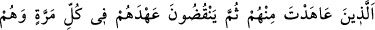
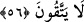

canlılar sınıfının tüm fertlerinin de en kötüleridir. Nitekim Allah Teâlâ: “Hayır, onlar
hayvanlar gibidir, hatta onlar daha sapıktır.” (el-Furkan, 25/44) buyurmuştur.
Yazık! Değerli olarak yaratılmış insanoğlu
Nasıl hayvanlar gibi, hatta daha da sapık olabilir?
56. Sen kendileriyle anlaşma yaptığın halde onlar hiç çekinmeden, her defa
anlaşmalarını bozarlar.
“Sen kendileriyle anlaşma yaptığın” kendilerinden söz aldığın “halde onlar” “hiç
çekinmeden,” andlaşma yapılan “her defa anlaşmalarını” sana verdikleri sözü
“bozarlar.” yani sürekli sözlerinden dönerler. Böyle yaparken de ahdinde durmamanın
günahından korkup çekinmezler. Yüzleri kızarmadığı gibi cehennem ateşine de aldırış
etmezler. Bunlar Kurayza Yahudileridir. Rasûlullah (s.a.v.) ile O’nun aleyhine hiçbir
düşmana yardım etmemeleri konusunda andlaşmışlardı. Fakat Bedir günü sözlerinde
durmayıp Mekkelilere silah yardımında bulundular. Daha sonra: “Biz verdiğimiz sözü
unuttuk. Hata ettik.” dediler ve tekrar ahidlerini yenilediler. Fakat Hendek Gazvesinde
yine müslümanların düşmanlarına arka çıktılar.
Bedir’de müslümanların müşriklere karşı zaferini gördüklerinde “Muhakkak ki
Muhammed, âhir zamanda gönderileceği va’dedilen peygamberdir. O, davasını sonuna
kadar götürecek ve hiç kimse de ona karşı direnemeyecektir.” diyorlardı. Sonra
Uhud’da müslümanların bir tür zayıf duruma düştüklerini görünce de şüpheye düşerek
önceki düşüncelerinden vazgeçtiler. Zaten Hz. Peygamberin dininin yücelmesi,
hakimiyetinin artması sebebiyle hased ateşi içlerini yiyip bitirmekteydi.
İşte bu yüzden Kurayzaoğulları’nın reisi Ka‘b b. Esed bir kısım arkadaşlarıyla
Mekke’ye giderek müşriklerle Rasûlullah’a karşı beraberce savaşmak üzere anlaştılar.
Bunun sonunda Hendek Savaşı meydana geldi.
Âyette işaret yoluyla Allah’a günahları ve kötülükleri terk edeceğine dair söz veren,
sonra da ardarda ahdini bozanlar yerilmektedir.
Sa’di
Vefâkar olmaya yokmuydu ahdin?
Neden nakzeyledin, oldun cefâkâr?
Barışmak istiyorsan, müsterih ol
Gönülde mevkiin bâkîdir ey yâr